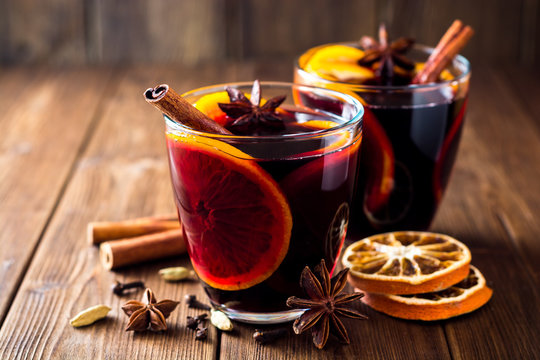

INGREDIENTS
- 750ml good quality red wine
- 150ml ruby port
- 125g soft brown sugar
- 2-3 star anise
- ½ tsp cloves
- 3 bay leaves
- 2 cinnamon sticks, broken in half if large
- 1 thumb-sized piece fresh ginger, roughly chopped
- 1 orange, cut into segments
PREPARATION INSTRUCTIONS
- Pour the wine and port into a large pan and gently warm through.
- Stir in the sugar until fully dissolved then add the spices.
- Warm through for 5 minutes, being careful not to let the wine boil.
- Serve warm (the optimum temperature is 55°C is using a kitchen thermometer), ladled into heatproof glasses.
- Alternatively, if you have time or want to make ahead, remove from the heat and allow to infuse for up to 2 hours to deepen the flavours. Strain the wine into a clean pan
and discard the spices, reheat gently to serve.